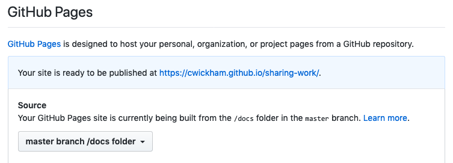
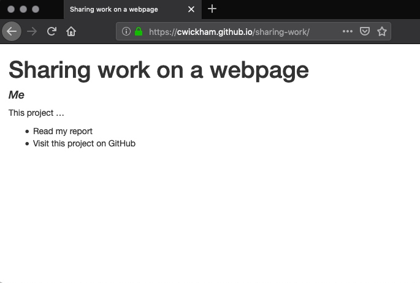

Chapter 6 Publishing
6.1 Questions
- How can I share my work on the web?
6.3 What does it take to get a webpage online?
To understand what it takes to get a webpage online, it helps to understand roughly what happens when you point your browser at a web address. When you point your browser at an address, for example https://merely-useful.github.io/py-publishing.html, the following things happen:
- The URL
https://merely-useful.github.iopoints to a location on another computer where the relevant files for this website reside. This computer is known as the website host or server, since it hosts the webpage files on its local storage drives and serves them to us via the internet. - The browser requests the file
py-publishing.htmlfrom the host. - The browser reads the contents of
py-publishing.htmland displays it for you in the browser window.
In reverse order this process also describes what you need to do to get your own website online:
- You need an HTML file that describes what people should see on your page.
- You need to host the HTML file on a computer on the internet.
- You need a way to associate a URL with the address of your host.
In this chapter,
you’ll learn how to get your work online
by creating HTML files using Jupyter notebooks (#1 above)
and how to host your work in a GitHub repository (#2).
The third step will be handled by a GitHub service called GitHub Pages.
By following the conventions that GitHub Pages expects,
you’ll be able to make a webpage for any of your repositories available at:
http://{{your_username}}.github.io/{{repo_name}}.
6.4 How do I get my work on the web?
6.4.1 A starting point
FIXME: revisit this later when more content is fleshed out. Maybe there will be a repo we can rely on all learners having that we can start from.
In practice you’ll probably start thinking about a website once you’ve already done a lot of work on a project—your project will already have some analysis documented in Jupyter notebooks, be in version control and hosted on GitHub. However, so that we can work with a specific example, you’ll set up a project in this section that is less developed than where your project might be when you start thinking about making a website.
At the end of this section,
you should have a project folder with an example report in report.Rmd.
This project should also be on GitHub at https://github.com/{{your_username}}/sharing-work,
where {{your_username}} should be substituted with your GitHub username,
e.g. mine is at https://github.com/cwickham/sharing-work.
Let’s start by creating a GitHub repository called sharing-work,
by following illustrated steps in the GitHub guide.
Open JupyterLab and create a new Jupyter Notebook
(“File -> New -> Notebook”, or the Python symbol on the launcher page)
Rename this file to report.ipynb and pair it with an .Rmd file using Jupytext.
The pairing to an .Rmd file is not necessary,
but enables a more human-friendly version control workflow.
Change the cell type of the first input cell from code to markdown
by using the dropdown menu in the toolbar.
Create a markdown title by typing # Sharing work in this cell.
Create another markdown cell and type “This is a test repo for GitHub pages”.
Commit the changes to the report.Rmd file and push your commits to GitHub.
As explained in the Jupytext section, you do not need to commit .ipynb files
unless GitHub to render the notebook output.
This is our starting point.
FIXME: Would it be better to get to this point by getting learners to fork a repo, then “New project -> From version control” in RStudio? Except forking isn’t in the plan for the Version Control section.
6.4.2 HTML files
HTML is the language of webpages.
JupyterLab makes it easy to turn your notebook into an HTML page
by clicking “File -> Export Notebook As -> Export Notebook to HTML”.
Now you will have a file name report.html the same directory as the notebook files.
HTML is a plain text format with markup tags
to indicate how web browsers should display the text.
If you open this file in a text editor,
you will see the contents of the file.
If you open it in a web browser,
your browser will read, interpret, and display the HTML for you.
You may notice the address bar in your browser looks something like:
file:///Users/wickhamc/Documents/Projects/sharing-work/report.htmlJust as https:// is a signal that a file resides on a remote server computer,
file:// is a signal that a file lives on your computer locally.
In spite of having “web” in their name,
web browsers perfectly displays local files as long as they are in a suitable format,
such as HTML.
However,
you couldn’t give this local address to someone else and expect it to work,
because they don’t have this file on their computer.
The HTML produced by JupyterLab is completely self-contained,
the browser needs no additional files to display the page as you see it now.
So if you email the file report.html,
your recipients could open it their browser and see the same result.
However,
our goal will be to put this HTML file on the web,
so you can share a link to the file instead of the file itself.
You’ll start by having this file accessible at the link https://{{your_username}}.github.io/sharing-work/report.html,
then learn how to have it displayed with the shorter link https://{{your_username}}.github.io/sharing-work
6.4.3 Setting up your repo to have a web page
Our goal is to get the report that is currently living in report.html displayed
when a visitor heads to https://{{your_username}}.github.io/sharing-work.
For this we can use GitHub Pages, which is available for any GitHub repository.
First create a folder named docs and move report.html into this folder,
the content of this folder is what will be displayed online.
You online repo structure should now look like this
(remember that the .ipynb files are not committed and pushed to GitHub,
they only exist in your local folder).
├── docs
│ └── report.html
└── report.RmdTo activate GitHub Pages, navigate to your GitHub Repository in the browser and head to the “Settings” tab.

Scroll to the “GitHub Pages” section.
Activate GitHub pages,
with source set to “master branch /docs folder”.
You should see a message that your site is now live at:
https://{{your_username}}.github.io/sharing-work

Try visiting:
https://{{your_username}}.github.io/sharing-work/report.html.
You should see your report.
Congratulations you have a webpage!
6.4.4 Getting a default page to display when people visit the project site
You could send people the link,
https://{{your_username}}.github.io/sharing-work/report.html,
but it is often nicer to send them the shorter version without the file name:
https://{{your_username}}.github.io/sharing-work.
You can try this now,
but it won’t work—you’ll see a message in your browser like:
“404- File not found”.
This shorter URL points to a directory as opposed to a file.
By default,
when a server receives a request for a directory,
it looks for a file to display with a default name—usually index.html.
In your case there is no file called index.html so there is nothing to display.
If you would like the contents of report.html to be displayed as the homepage of your project,
rename report.ipynb to index.ipynb.
You’ll then need to regenerate the HTML file,
commit it,
and push your changes.
For work that is communicated easily in one page,
this would be a good option.
Alternatively,
you might have a different page as the default page—one that summarizes
the project and then links to other more detailed pages.
You’ll see how to do this over the next few sections.
To get started create a new Jupyter Notebook paired with an .Rmd file.
Create a markdown cell with the following content.
Rename the file to index.ipynb,
export as HTML to docs/,
commit index.html,
and push your changes.
Your repo should now look like:
├── docs
│ ├── index.html
│ └── report.html
├── report.Rmd
└── index.RmdNow when you visit https://{{your_username}}.github.io/sharing-work you should see:

Note that it might take some time for the webpage to refresh automatically
and detect the new index file.
You can trigger this manually by going to GitHub Pages settings
and changes the source branch to something else than docs/ and then back again.
6.4.5 What does it take to get your work on a webpage?
To sum up the process above,
in its most minimal form,
to have a webpage at https://{{your_username}}.github.io/{{repo_name}},
your repo at https://github.com/{{your_username}}/{{repo_name}} needs to:
- have an
index.htmlfile in thedocsdirectory - have GitHub Pages activated in repository settings with source set to “master branch /docs folder”.
Be aware that everything inside the docs folder is now public,
even if your repository is private.
You might have noticed this book lives at a GitHub Pages URL
without a repo name—there is nothing after the .io in https://merely-useful.github.io.
Both GitHub organizations and individuals can make use of this shorter address
(merely-useful is an organization rather than a user,
so this is an organization site).
There are a few differences between what you’ve learnt so far and the process of setting up a user site without a repo name (at https://{{your_username}}.github.io).
First,
you need to name your repository in a specific way—it must be called {{your_username}}.github.io.
Second,
user sites don’t use the docs/ folder—you put your HTML files at the top level in the repo.
And third,
you don’t have to change any settings with user sites—GitHub will recognize the repo name and automatically serve it at https://{{your_username}}.github.io.
6.4.6 Exercise: Customize index.Rmd
Edit
index.Rmdto have your name as the author.Export
index.Rmdto HTML verify your changes in the browser, then commit and push them.Visit
https://{{your_username}}.github.io/sharing-workto check the updated site.
This is the workflow for making changes to your webpage. Make edits locally, and export the notebook to check them. Then commit and push to make those changes visible on the web.
6.5 How do I link to other pages, files or images?
6.5.1 Linking to other pages
To create a link to another page in markdown file you use the syntax:
Once exported to HTML,
only text to display will be visible,
and clicking on the text will take a viewer to url.
For example,
to add a link to my GitHub repo I might add the following line to index.Rmd:
Which when exported to HTML renders like:
Visit my github repo
This is an example of an absolute URL.
Just like when you specify file paths on your own computer,
URLs can be both absolute and relative.
An absolute URL describes a file location starting from and including the domain name.
For instance,
the absolute URL that points to report.html in my repo is https://cwickham.github.io/sharing-work/report.html.
Relative URLs are relative to the current HTML file.
So,
for instance if you are viewing https://cwickham.github.io/sharing-work/index.html,
a relative link to my report.html would be report.html since this file is at the same level as index.html in my website structure.
For pages created using this GitHub Pages workflow,
your website structure is the same as the file structure in your docs/ folder.
To add a link to report.html in index.Rmd I would add a line like:
You should use relative URLs to reference any of your files (
i.e. those in docs/).
That way if you ever rename your repository,
move it,
or use a different hosting platform,
your links will all work without changes.
You must use absolute links for files that reside elsewhere on the internet.
6.5.2 Exercise: Relative links
Imagine your docs/ folder had the following structure
└── docs
├── index.Rmd
├── index.html
├── diagrams
│ └── workflow.png
└── reports
├── jan.Rmd
├── jan.html
├── feb.Rmd
└── feb.htmlUsing a relative URL, how would you refer to:
jan.htmlfromindex.html?feb.htmlfromjan.html?workflow.pngfromindex.html?
6.5.3 Exercise: Add links to index.html
Add to index.Rmd:
- a link to
report.htmlusing a relative link, and - a link your GitHub repository using an absolute link.
6.5.4 Linking to sections within a page
URLs can also refer to places inside the current page,
most usually to another section.
In Markdown you’ve seen how to create headings using #.
For example,
an Appendix subsection might be:
If we want to link to this section from elsewhere,
you prefix the section name with a single # in the URL.
For example,
if this section is in report.Rmd and you want to link to it elsewhere in report.Rmd,
you could use:
The URL #appendix is interpreted as the heading with ID appendix in the current page.
Jupyter Notebooks creates IDs for all sections (and subsections) automatically,
by converting to lower case and replacing spaces with dashes (-).
But,
you can explicitly set IDs too,
by adding the ID with the # inside curly braces after the section heading.
For instance you might prefer the shorter appen ID.
You need to set it where the heading occurs:
Then you can link to it using this shorter ID elsewhere:
You can also use this strategy to link to sections in other pages by including the relative URL first.
For instance,
to refer to this “Appendix” section from index.html you could include in index.Rmd:
6.5.5 Exercise: Add and link to a section in report.Rmd
Add a new section to report.Rmd and include a link to it in index.Rmd.
You’ll need to export both report.Rmd and index.Rmd,
and commit and push the HTML files to check your work.
6.5.6 Including images
Most of your images will likely be plots generated by code in the notebook and thus automatically included in the exported HTML. If you want to display other images, you use the same syntax you saw in the Markdown section of the Reproducibility chapter chapter. That is, in your notebook you’ll include the image with something like:
However,
the path/to/image/file.png should be a relative URL pointing at an image in your docs/ directory.
For example,
if you had an image,
me.png,
inside an images directory inside your docs folder:
└── docs
├── index.Rmd
├── index.html
├── report.Rmd
├── report.html
└── images
└── me.pngYou could include it in index.html by adding to index.Rmd the line:
Notice the syntax is very similar to adding a link to me.png:
Including the image displays the image inside at the appropriate place in the current page, linking to the image requires a viewer to click the link to see the image.
Your image will be included at full size,
but you might find it too large.
You can additionally specify some attributes for the image in curly braces immediately following the link.
For instance,
use the width attribute to set the image width,
either in pixels:
Or as a percentage:
6.5.7 Exercise: Add an image to index.html
Include an image in your index.Rmd.
(If you need an image to include you could always build your own version of an Octocat,
GitHub’s mascot).
Don’t forget, you’ll need to commit both your exported index.html and your image.
6.6 Exercise: Add a website to an existing project
Add a website to one of your existing project repositories. You’ll need to complete the following steps:
- Create a
docs/directory in your project. - Add an
index.Rmddocument to thedocs/folder and export it to HTML to produceindex.html. - Commit these changes to git, and push to GitHub.
- Activate GitHub Pages in the repository settings with source set to “master branch /docs folder”.
- Visit the site to check it is working.